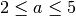
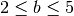
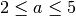
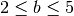
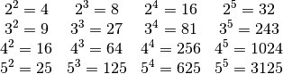
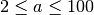
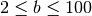

Distinct powers¶
Problem 29
Consider all integer combinations of  for  and :
for  and :

If they are then placed in numerical order, with any repeats removed, we get the following sequence of 15 distinct terms:
4, 8, 9, 16, 25, 27, 32, 64, 81, 125, 243, 256, 625, 1024, 3125
How many distinct terms are in the sequence generated by for  and ?
Solution
Reuse euler05.primeFactors()
from euler05 import primeFactors, prod
def distinctTerms( limit ):
"""Return the set of distinct terms.
Rather than compute the products, we instead emit
a tuple of prime factors.
>>> from euler29 import distinctTerms
>>> dt5= distinctTerms(5)
>>> sorted( map( prod, dt5 ) )
[4, 8, 9, 16, 25, 27, 32, 64, 81, 125, 243, 256, 625, 1024, 3125]
>>> len(dt5)
15
"""
def allTerms(limit):
for a in range(2,limit+1):
f= primeFactors(a)
for b in range(2,limit+1):
yield tuple(sorted(f*b))
return set( allTerms(limit) )
Test the components in this module.
def test():
import doctest
doctest.testmod(verbose=0)
Compute the answer.
def answer():
dt100= distinctTerms(100)
return len(dt100)
#print( dt100 )
Confirm the answer.
def confirm(ans):
assert 9183 == ans, "{0!r} Incorrect".format(ans)
if __name__ == "__main__":
test()
ans= answer()
confirm(ans)
print( "Distinct terms in the 98x98 grid of a^b values:", ans )